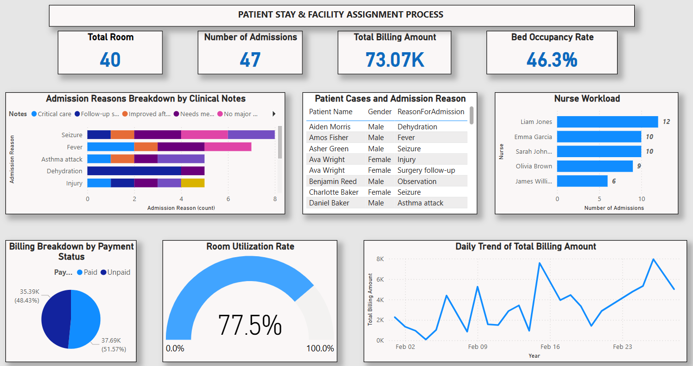
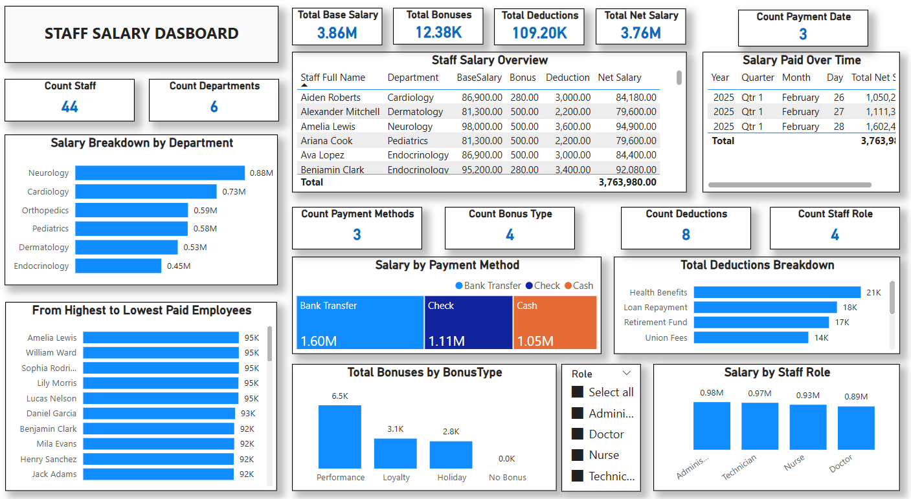

Dashboards
Screenshots of key report pages from the PBIX file.

Patient Appointment Trends & Access Insights
Trends and KPIs supporting scheduling and access visibility.

Prescription Insights & Financial Overview
Prescription patterns and related financial indicators.

Medicine Stock & Supplier Performance
Inventory monitoring and supplier performance tracking.

Patient Stay & Facility Assignment Process
Patient flow and assignment metrics for operational oversight.

Staff Salary Dashboard
Salary distribution insights supporting staffing analysis.